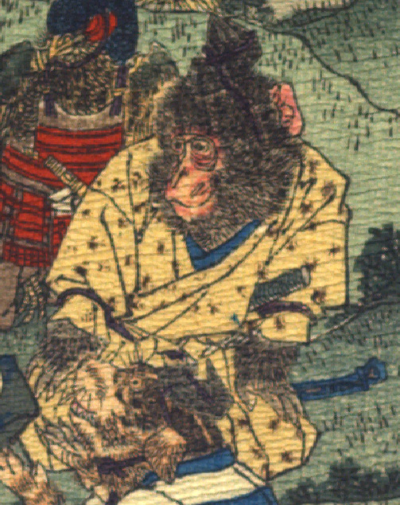

猿。烏帽子をかぶり、黄色の着物と袴を着て、腰に刀を差している。座って、膝の上に前脚を置いている。
著作者：J.E.de Campos／出典：親書誌：U426_nichibunken_0115：Momotaro／日付：2006／資源識別子：U426_nichibunken_0115_0001_0002
Copyright (c)2010- International Research Center for Japanese Studies, Kyoto, Japan. All rights reserved.